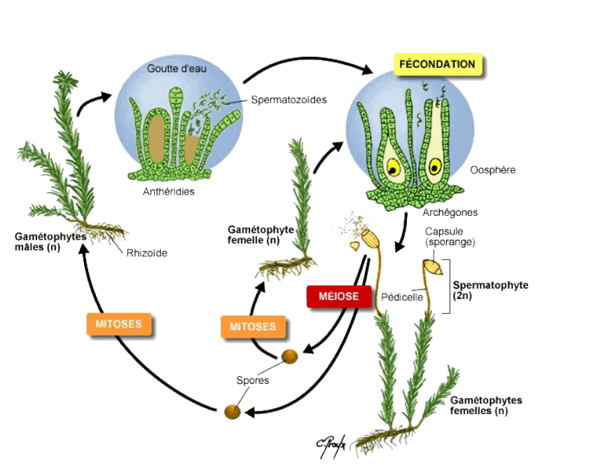
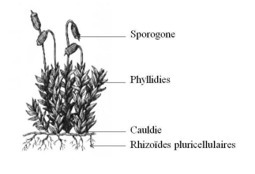

Problème résolu par les Mousses :
Hors de l'eau, une plante risque de se dessécher et doit se fixer au sol. Les mousses restent petites et vivent dans des milieux humides.
Innovation apportée par les Mousses :
La cuticule, une fine couche qui limite la perte d'eau ; les stomates, de petits pores qui permettent les échanges de gaz ; les rhizoïdes, de petits filaments qui fixent la plante au sol.


Mousses
Les mousses n'ont ni vraies racines ni vaisseaux : de minuscules filaments, les rhizoïdes, les fixent au sol et la tige feuillée absorbe l'eau directement.
Schéma du cycle de reproduction des bryophytes
La reproduction sexuée des Bryophytes nécessite l'eau et des gamètes mâles nageurs. Après fécondation, le sporophyte se développe sur le gamétophyte femelle et produit des spores dans une capsule. En milieu humide, les spores germent et donnent un protonéma qui forme une nouvelle plante. Leur cycle présente une alternance entre le gamétophyte haploïde et le sporophyte diploïde. Elles peuvent aussi se multiplier par fragmentation et formation de propagules..

Appareil végétatif des bryophytes
L'appareil végétatif des Bryophytes est petit (rarement plus de 20 cm). Il est constitué de tiges et de petites feuilles ou d'un thalle. Il ne possède ni vraies racines ni vaisseaux conducteurs développés. La fixation est assurée par des rhizoïdes, et l'absorption de l'eau et des sels minéraux se fait directement à travers les organes végétatifs.